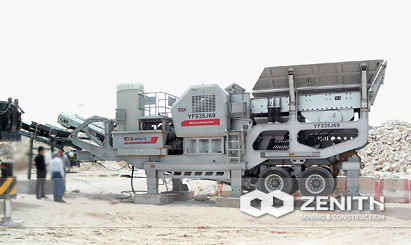
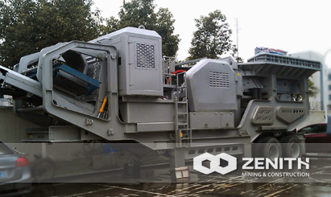
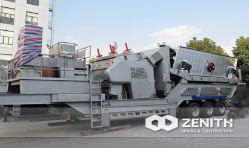
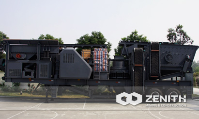

- 
- 
- 
- 
Mobile Combined Crushing Plant
Mobile combined crushing plant is a kind mobile crusher equip with jaw crusher, cone crusher, impact crusher and other auxiliary equipment such as vibrating feeder, vibrating screen and conveyor belts etc. Zenith mobile crusher will be the popular crushing plant in the mining and construction industry world wide.
The mobile combined crushing plant has the advantages of easy transportation, low transportation cost, flexible configuration, convenient maintenance etc.
Widely Application of mobile Combined Crushing Plant
Zenith's combined mobile crushing plants are ideal for primary, secondary and tertiary crushing and screening applications in quarrying, mining, recycling, infrastructure and construction. As for the mining materials, Zenith's combined mobile crushing plant can be applied to crush, screen and stockpile coal, aggregate, sand, construction and demolition waste, ores, blasted rock and river stone.
The combined mobile crushing plant can be considered as a two-stage crushing and screening system, as a three-stage coarse, secondary and tertiary crushing and screening system. Zenith's combined mobile crushing plant is suitable for small, medium, large scale crushing tasks. Alternatively, oversized materials can be recirculated back to the crusher to reach the required size.
mobile Combined Crushing Plant Benefits and advantages
- The product use of world-class manufacturing processes, selection of the most high-end materials.
- The base of bearing use of integrated steel structures.
- The broken cavity is deep and without dead zone, increased capacity and output feed.
- The broken cavity using "V"-shaped structure, so that the actual width of feed is same as nominal line width.
- Lubrication system is safe and reliable, convenient of replace parts, easy to maintenance.
- The outlet use of pad-style adjustment devices, convenient and reliable, large of adjustment range, and increase the flexibility of the equipment.
The tacnology data
| Model | Quad-play Combined Modile Crushing Plant | |
|---|---|---|
| Car Body | Two-Spindle | |
| Feeder | Model | GZD960×3800 |
| Feeding Size(mm) | 500 | |
| Power(kw) | 6-11 | |
| Crusher 1 | Model | PE400×600 |
| Feeding Size(mm) | 350 | |
| Power(kw) | 6-37 | |
| Crusher 2 | Model | CS75 |
| Feeding Size(mm) | 115 | |
| Power(kw) | 55 | |
| Vibrating Screen | Model | 3YK1237 |
| Feeding Size(mm) | ≤200 | |
| Power(kw) | 4-15 | |
| Belt Conveyor(standard configuration) | Size(m) | B500×14 |
| Size(m) | B650×6 | |
| Size(m) | B650×9 | |
| Size(m) | B500×4 | |
| Engine(optional) | Power(kw) | 200 |
| Overall Dimension(mm) | 15200×2900×4350 | |